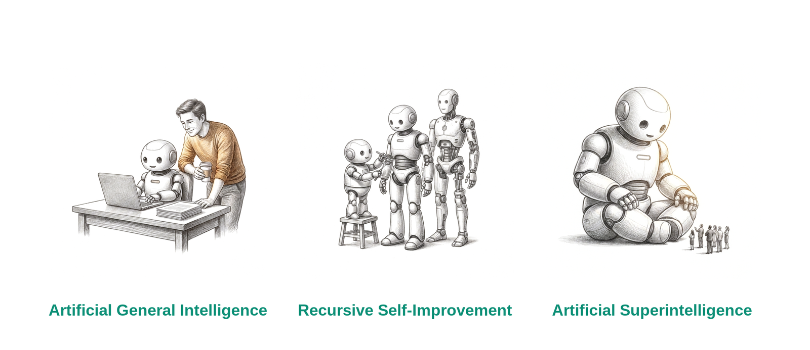
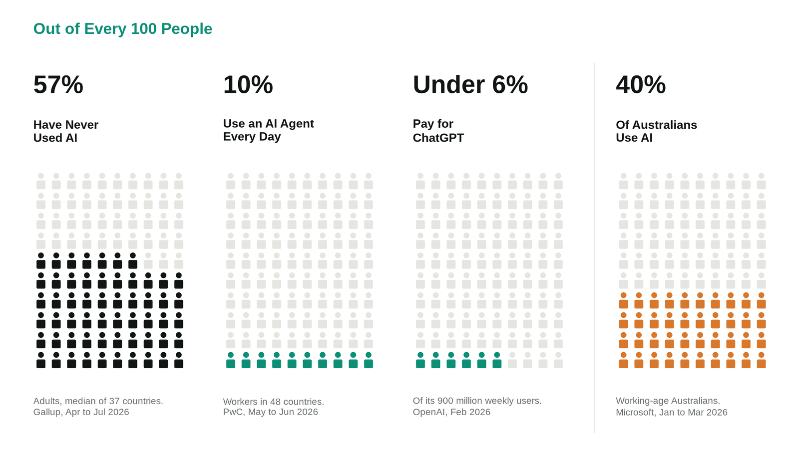
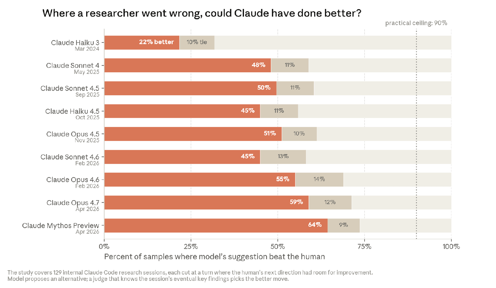
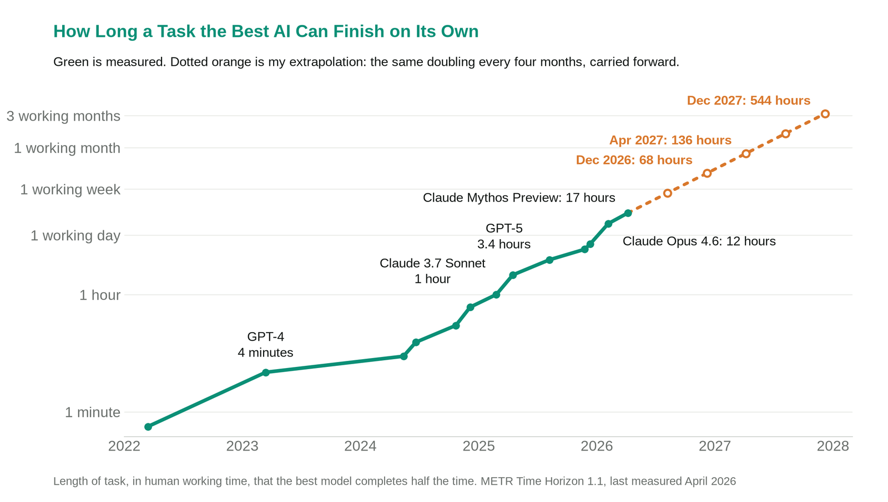
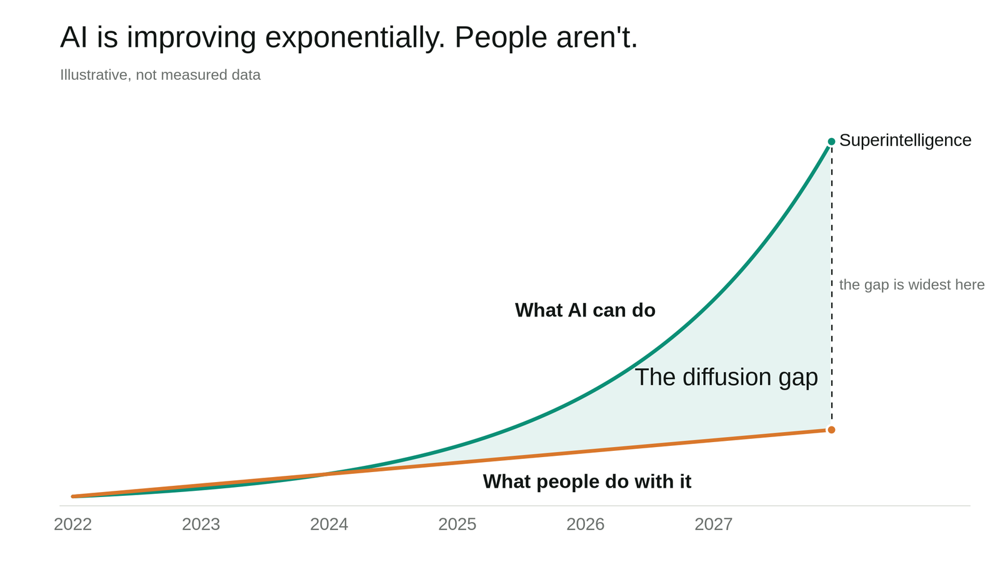
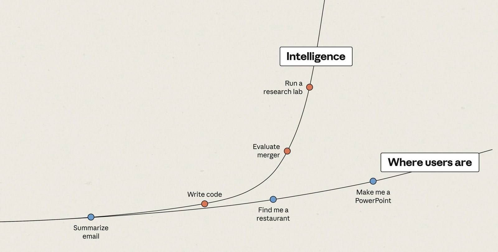

<title>Situational Awareness for Australia</title>
<meta name="claude:viewport-fit-sides" content="cover">
<link rel="stylesheet" href="https://fonts.googleapis.com/css2?family=Instrument+Serif:ital@0;1&family=Hanken+Grotesk:wght@400;600;700&display=swap">
<style>
/* Layout: one reading column, 66 characters wide, on white so the white charts sit flush. Single light theme by choice: the charts are white images. */
:root { --bg: #FFFFFF; --ink: #111614; --muted: #6B706D; --teal: #0B6E5B; --line: #E3E6E1; --wash: #F3F6F4; --mark: #FFF1C2;
  --serif: "Instrument Serif", Georgia, "Times New Roman", serif; --sans: "Hanken Grotesk", "Helvetica Neue", Arial, sans-serif; color-scheme: light; }
body { background: var(--bg); color: var(--ink); font-family: var(--sans); font-size: 1.0625rem; line-height: 1.65;
  padding-left: max(16px, env(safe-area-inset-left, 0px)); padding-right: max(16px, env(safe-area-inset-right, 0px)); padding-block: 2.5rem 5rem; }
main { max-width: 41rem; margin: 0 auto; display: flex; flex-direction: column; gap: 1.15rem; }
main > * { margin: 0; min-width: 0; }
.byline { color: var(--muted); font-size: 0.9375rem; }
.toc ul { list-style: none; padding: 1rem 0; border-block: 1px solid var(--line); gap: 0.3rem; }
.toc a { font-family: var(--serif); font-size: 1.25rem; text-decoration: none; }
.toc a:hover { text-decoration: underline; }
h2 { scroll-margin-top: 1rem; }
h1 { font-family: var(--serif); font-weight: 400; font-size: clamp(2.4rem, 7vw, 3.5rem); line-height: 1.05; text-wrap: balance; margin-top: 1.5rem; }
h2 { font-family: var(--serif); font-weight: 400; font-size: clamp(1.75rem, 5vw, 2.25rem); line-height: 1.15; text-wrap: balance; margin-top: 2.5rem; padding-top: 1.5rem; border-top: 1px solid var(--line); }
.claim { font-weight: 700; font-size: 1.1875rem; line-height: 1.4; margin-top: 0.75rem; }
a { color: var(--teal); text-underline-offset: 0.15em; overflow-wrap: anywhere; }
a:focus-visible { outline: 2px solid var(--teal); outline-offset: 2px; }
ol, ul { padding-left: 1.4rem; display: flex; flex-direction: column; gap: 0.4rem; }
figure { margin-block: 0.5rem; }
figure img { display: block; width: 100%; height: auto; }
.clip video { display: block; width: 100%; max-height: 32rem; background: var(--ink); border-radius: 6px; }
figcaption, .caption { color: var(--muted); font-size: 0.875rem; line-height: 1.45; margin-top: 0.5rem; }
.caption { margin-top: -0.5rem; }
.card { border: 1px solid var(--line); border-radius: 6px; padding: 0.75rem 1rem; font-size: 0.9375rem; }
mark { background: var(--mark); color: var(--ink); padding: 0 0.2em; border-radius: 3px; }
</style>
<main>
<h1>Situational Awareness for Australia</h1>
<p class="byline">Finlay Ekins, Hourglass AI · November 2026 · <a href="situational-awareness-for-australia.pdf">Download as PDF</a></p>
<nav class="toc" aria-label="Contents"><ul><li><a href="#i-where-ai-is-today">I. Where AI Is Today</a></li><li><a href="#ii-what-happens-next">II. What Happens Next</a></li><li><a href="#iii-the-diffusion-gap">III. The Diffusion Gap</a></li><li><a href="#iv-why-australia">IV. Why Australia</a></li><li><a href="#v-the-objections">V. The Objections</a></li><li><a href="#vi-what-to-do-next">VI. What To Do Next</a></li><li><a href="#a-letter-to-australia">A Letter to Australia</a></li></ul></nav>
<p>In 2023 I was still studying at Melbourne Uni when I first heard about ChatGPT. A friend had gotten an 82 on their essay using it. I soon went all in on AI, spending ten months trying and failing to make a business consulting on how to use tools like ChatGPT (this business was quite novel in Australia at the time). I ended the year with a whopping revenue total of $28k. This year Hourglass had its first $100k month, and we hit a $1 million run rate in our first year as a company.</p>
<p>The real winning differentiator in what we do was being able to harness the current AI models properly, and share that with businesses that were further behind. Today's models are immensely powerful, and most of Australia doesn't have a clue how to use them properly.</p>
<p>Below is my attempt at writing a <a href="https://situational-awareness.ai/">Situational Awareness</a> for Australia: where AI is today, what happens next, and why we're one of the best-placed countries in the world to win from it. I love this country and I want us to win.</p>
<h2 id="i-where-ai-is-today">I. Where AI Is Today</h2>
<p class="claim">We already have AGI, and most of the world can't see it yet. A small group of people use today's models for nearly all of their work, while 57% of adults have never used AI and fewer than 6% of ChatGPT's users pay for it. The split started with software, because writing code was the first thing AI became amazing at. Now anyone can build software in plain English, and that changes how every business works.</p>
<p>Before I begin, I want to lay out three key terms and how I define them:</p>
<p>1. Artificial General Intelligence (AGI) - AI that can do most knowledge work.</p>
<p>2. Recursive Self-Improvement (RSI) - AI being able to build the next, more intelligent AI model autonomously.</p>
<p>3. Artificial Super-Intelligence (ASI) - AI that is smarter than every human at everything intelligence-based.</p>
<figure></figure>
<p class="claim">We already have AGI. The world can't see it yet.</p>
<p>Right now, a select group of people truly appreciate how good today's AI models are. These people use them daily for near all of their work, and many work at AI companies. Most of these people also live on Twitter, which has now become the home for novel AI discourse. I'm of the belief that if you are deep enough in using AI and building AI systems, you will agree with me that models like Opus 5.5 by Anthropic can handle a large majority (80%+) of knowledge work if provided with the proper context.</p>
<p><strong>By my own definition, this is AGI.</strong> Some may disagree because there is no consensus definition of what AGI means, but it's hard to dispute that if you were shown today's AI models just 5 years ago, you would think it was something out of a Sci-Fi movie set in the distant future.</p>
<p>Sam Altman <a href="https://www.youtube.com/watch?v=oi-E6xB4wSU">said this week</a> "you can't simply draw a line and say AGI didn't exist before and suddenly exists now." I agree with the sentiment and think that when we look back at November 2026, we will say it was already here and we just hadn't agreed on it.</p>
<p>On the other side, outside the echo chamber of AI meetups and Twitter threads, <strong>the general population has barely scratched the surface of using AI.</strong> Globally, <a href="https://news.gallup.com/poll/714593/optimism-globally-widespread-despite-uneven.aspx">57% of adults have never used AI</a>. Only <a href="https://www.pwc.com/gx/en/news-room/press-releases/2026/companies-risk-losing-ai-savvy-employees.html">10% of workers</a> use an AI agent every day and <a href="https://techcrunch.com/2026/02/27/chatgpt-reaches-900m-weekly-active-users">fewer than 6%</a> of ChatGPT's users pay for it, which is what unlocks the tools that hold the real power of AI advancements. Australia is doing better than most with about 40% of working-age Australians using AI.</p>
<figure></figure>
<p>This leaves us today in an incredibly interesting dynamic, where a small selection of the population has a near infinite supply of intelligent workers (AI agents) for about A$350 a month, whilst for the rest of the world, nothing's changed.</p>
<p>The reason for this split is that the first place AI excelled was writing code, so those people who felt the incredible advancements first were those in technical roles like software developers. If you don't write software, the last few years in AI mostly looked like a chatbot getting slightly smarter over time. If you do, you watched your entire industry transform in front of you. Claude Code is less than two years old. I haven't written code by hand in months, and Hourglass is a team of six that runs over 95% of admin and operations via AI agents working day and night.</p>
<p><mark>Image to add: your 'Changes merged per day by Claude inside Anthropic' chart from X</mark></p>
<p class="caption">Changes merged per day by Claude inside Anthropic</p>
<p>The biggest revelation here is that <strong>anyone can now build near-perfect software by prompting an AI chatbot in plain English.</strong> We work with people who have never written a line of code and are shipping tools their company runs on. Software used to be something you bought and bent your business around. Now you describe what you want and you get it. Every business runs on software, so every business works differently once that is true.</p>
<h2 id="ii-what-happens-next">II. What Happens Next</h2>
<p class="claim">RSI by March 2027, and ASI by the end of 2027. The length of task AI can finish on its own has been doubling roughly every four months, and the labs are already using current models in research.</p>
<p>Two things are now true at the same time. We have incredibly intelligent AI models that anyone can access, and we have a general public that barely uses them to their full power. What happens over the next two years comes down to how those two facts play out against each other, so I'll start with where I think the technology goes and then get to what it means for people.</p>
<p>Below are my three predictions:</p>
<p class="claim">1. AGI is already here (2026).</p>
<p class="claim">2. RSI is achieved by March 2027.</p>
<p class="claim">3. ASI is achieved by the end of 2027.</p>
<p>I've already made the argument for the first one above, so I'll focus on the other two.</p>
<p>On RSI, the AI labs are already most of the way there. As of May 2026, <a href="https://www.anthropic.com/institute/recursive-self-improvement">more than 80% of the code merged at Anthropic was written by Claude</a>, up from low single digits before Claude Code launched in early 2025. <a href="https://anthropic.com/responsible-scaling-policy/roadmap">Anthropic's own safety roadmap</a> says it is plausible, as soon as early 2027, that its systems could fully automate the work of top-tier research teams, including in AI itself. One of its co-founders, Jack Clark, puts the odds of RSI at 60% by the end of 2028. My own guess is that it happens way sooner, around March 2027. We consistently underestimate how fast this exponential is moving, and we always downplay what comes next, which is why my predictions are sooner than most.</p>
<figure></figure>
<p class="caption">Anthropic's chart showing Claude's contributions to the research of its next model</p>
<p>OpenAI is in a similar spot. They've <a href="https://openai.com/index/building-standards-next-phase-ai/">written</a> that "fully autonomous RSI is not happening today" and that it shouldn't be pursued until it can be done safely, and Sam Altman has reportedly said they slowed down their own work on it for that reason. I read that as a company that is close enough to RSI that it has had to decide when to hit the brakes.</p>
<p>As I write this, on 19 November, Anthropic is going public on the Nasdaq. A company that did not exist six years ago is now floating at a valuation of nearly 2 trillion USD.</p>
<p>On ASI, Altman is on record saying that by the end of 2028, more of the world's intellectual capacity could sit inside data centres than outside them. I think he is being conservative. The clearest measure I've seen is from <a href="https://metr.org/time-horizons/">METR</a>, who track how long a task the best AI model can finish on its own. In early 2023 that was four minutes. By April this year it was 17 hours, and <strong>it has been doubling roughly every four months.</strong></p>
<figure></figure>
<p class="caption">METR has stopped updating the chart because the timeframe is now too long for them to test</p>
<p>Do the maths on that. 17 hours in April 2026, doubling every four months, is 34 hours by August and 68 hours by December. By March 2027 it is around 120 hours, which is three full working weeks for a skilled person, done by one model on its own. By December 2027 it is over 500 hours, more than three months of full-time work. A model that can run a three-month project by itself can run the project of building its successor.</p>
<p>I could be wrong about the timing. METR's numbers come with wide error bars, the labs could run short of compute, and if the doubling slows to every seven months, which is closer to the longer-run trend, these dates slip by about a year. So take 2027 as my best guess and 2028 as the slow case. Either way it is this decade, and most likely the next two years.</p>
<p>The interesting piece that I think gets missed is that smarter AI also lets us build smarter context and better systems around it, which is what allows the intelligence to actually be used in practice, by people and AI working together. So the models get better, and so does everything we wrap around them.</p>
<p><strong>I think 2027 will be the craziest year any of us have lived through.</strong> A year from now I will come back and score these three predictions in public.</p>
<h2 id="iii-the-diffusion-gap">III. The Diffusion Gap</h2>
<p class="claim">AI is improving exponentially. People aren't. The gap between what AI can do and what people do with it is the diffusion gap, and I think it peaks in the next year or two.</p>
<p>This follows straight on from the predictions, and it's the idea I most want Australians to take from this essay.</p>
<p>The technology is getting better on a hockey stick curve whilst human adoption is a gradually increasing line. There is a growing gap between what AI can do and what people do with it, and it widens every month. I call it <strong>the diffusion gap.</strong></p>
<figure></figure>
<figure></figure>
<p>My curve, and a similar one from Anthropic's IPO roadshow.</p>
<p>Altman has said this is what he got wrong: "The economy just has so much inertia. People keep doing the same things they're doing." I see it every week. I have spent this year inside Australian businesses, and the technology is never the hard part. The hard part is getting someone to work differently on a Tuesday morning. The tools work on day one. The habits take months.</p>
<p><mark>Finlay to add: the property talk. What you saw in that room: two-thirds of the teams had a few people on ChatGPT or no plan. Two or three sentences, your words.</mark></p>
<figure class="clip"><video controls preload="metadata" playsinline src="vid/altman-inertia.mp4"></video><figcaption>Sam Altman on economic inertia, from David Senra's interview. <a href="https://x.com/davidsenra/status/2093324738328195372">Original post</a></figcaption></figure>
<p>Eventually people will catch up and start using AI properly over the next decade. <strong>I think the gap is at its widest sometime in the next year or two, at the point where we have ASI whilst most people are still yet to use AI regularly.</strong> Until then, we are still early. That's a scary thought, because to me it means there will be AI that is smarter than many people, and can do their job entirely, whilst they have never even heard of it or tried it.</p>
<p>I think people end up in one of two groups. In the first are those who never really use AI, and before they know it, it has replaced what they do. In the second are people who are using it deeply now, and have their output augmented ad infinitum by it. Everyone will sit somewhere along that spectrum, and where you sit is still up to you.</p>
<p>Almost all of the opportunity in AI over the next few years sits inside that gap. It is the whole reason Hourglass exists. <strong>The countries and companies that close it fastest will win the next decade.</strong></p>
<h2 id="iv-why-australia">IV. Why Australia</h2>
<p class="claim">Our people are early and our institutions are late. Australians use Claude more per person than any other country, we have the land and power the AI companies want, and we are starting to build our own models. But only about 12% of our businesses use AI, and we are the most sceptical country surveyed.</p>
<p>I think Australia is better placed than almost any country to capitalise on this coming AI boom.</p>
<p><strong>We are curious.</strong> Australians use Claude more per person than any other country in the world, <a href="https://itbrief.com.au/story/australia-tops-claude-usage-per-capita-anthropic-says">more than six times</a> what our population would predict. We are a have-a-go country, whose inception was founded upon risk-taking and pushing forward the frontier.</p>
<p><strong>We have the room and the power.</strong> Data centres need land and energy, and we have plenty of both. Anthropic has <a href="https://www.itnews.com.au/news/anthropic-signs-first-australia-data-centre-agreement-628972">reportedly signed its first Australian data centre lease</a>, a 2.16 gigawatt site in Queensland. OpenAI and NEXTDC are <a href="https://www.minister.industry.gov.au/ministers/timayres/media-releases/7-billion-infrastructure-deal-boost-ai-australia">planning a $7 billion campus</a> in Western Sydney. The biggest AI companies in the world want their compute here.</p>
<p><strong>We can be sovereign.</strong> We are a stable, trusted country with our own resources. We can run this technology on our own soil and under our own rules.</p>
<p><strong>We are starting to build our own.</strong> This month Trellis Data in Canberra <a href="https://trellisdata.com/newsroom/trellis-data-launches-agentaus-1/">released Agentaus 1</a>, a 220 billion parameter model built in Australia. It scored 84.4% on MMLU-Pro, a test of knowledge and reasoning, which Trellis says ranks it 43rd in the world and first in Australia. This makes me so bullish on what we can create as a country.</p>
<figure class="clip"><video controls preload="metadata" playsinline src="vid/agentaus-launch.mp4"></video><figcaption>Trellis Data launches Agentaus 1. <a href="https://x.com/MGately_au/status/2122780345947017287">Original post</a></figcaption></figure>
<p><strong>We have a ridiculously talented young tech scene.</strong> Across all major cities, there is a wave of founders in their twenties building AI-native companies from day one. A few of them:</p>
<ul><li>Jock and Gaurav at Fastlane, building AI that runs your ads end to end</li><li>Finlay at Fluency</li><li>Sam Rogers at Brumby (Y Combinator), who at 19 is mustering cattle with AI drones</li><li>Zander Schweitzer and Cielo Nicolosi at Alloovium (Y Combinator), building the company brain for construction</li><li>Cyrus Kelly and Shyamsundar Shrestha at markup.one (Y Combinator), out of Adelaide</li></ul>
<p>On the other side of this, our businesses are behind. Only <a href="https://www.abs.gov.au/media-centre/media-releases/business-adoption-artificial-intelligence-accelerates-2024-25">about 12% of Australian businesses</a> reported using AI in 2024-25, against <a href="https://census.gov/library/stories/2026/05/ai-use-businesses.html">about one in five</a> in the United States, and the US number only counts use in the previous two weeks. We are also the most sceptical country in the world about AI. <a href="https://mbs.edu/faculty-and-research/trust-and-ai/australian-story">Only 30% of Australians</a> think the benefits outweigh the risks, the lowest of 47 countries surveyed.</p>
<p><strong>So individual Australians are early, and Australian institutions are late.</strong> I think that is good news, because it means the gap here is wider than almost anywhere, and so is the upside for anyone who moves first. It is a big part of why building Hourglass here has worked for us, and why we want to stick to our roots as an Aussie company.</p>
<h2 id="v-the-objections">V. The Objections</h2>
<p class="claim">The most common pushback I get is that AI is dangerous and we should slow it all down. I don't think opting out is a real choice for Australia.</p>
<p class="claim">"You are cheering for the end of the world."</p>
<p>Whenever I write something like this, someone tells me the data centres are evil and we should slow it all down. I understand the worry, and I have two answers.</p>
<p>The first is that opting out of AI does not stop it. The models get built either way, and all we choose is whether Australia has a say in them. If all of Australia's AI runs on American models in American hands, every dollar we spend on it leaves the country, and we depend on whatever one or two companies decide. So I would rather we build our own capability here, starting with compute. That is the case for the data centres.</p>
<p>The second is that humans have a terrible record at predicting the end of the world. We have been sure about it many times and we have never been right. Further, if we are right, and AI will cause the end of the world, wouldn't our understanding of it help us to fight it?</p>
<p><mark>Finlay to add: your answer to "AI will take my job". The essay says earlier that AI replaces people who never use it, so a sceptical reader is waiting for this.</mark></p>
<p class="claim">I would rather be building this than watching it happen.</p>
<h2 id="vi-what-to-do-next">VI. What To Do Next</h2>
<p class="claim">If you run a business in Australia, these are the four things I would do first.</p>
<p><strong>1. Use it properly.</strong> A chatbot tab you open twice a week doesn't count. Pay for the best model and use it for real work every day, until you hit the moment it does something you couldn't.</p>
<p><strong>2. Try to build software.</strong> This is the barrier worth breaking. Pick one annoying thing in your business, open Claude Code or Codex, and describe what you want. You will be surprised how far you get in an afternoon. Once you have built one thing, you stop seeing software as something you buy.</p>
<p><strong>3. Think in systems.</strong> One person doing one task faster is a small win. The bigger win is setting your company up so AI can see what is going on, with your meetings, emails and documents in one place it can read. That context is what makes a smart model useful. AI labs are incentivised to maximise individual output with AI, but it is up to you to build or buy systems that allow you to collaborate effectively with AI as a team.</p>
<p><strong>4. Treat it as a collaborator.</strong> The companies doing this well give AI a goal and review what comes back, the way you would with a good new hire. People keep the parts only people can do, like the relationships and putting your name on the result.</p>
<p>You can do all four without a big budget or a technical team. Someone in the business just has to go first.</p>
<h2 id="a-letter-to-australia">A Letter to Australia</h2>
<p>I wrote this essay because I want us to succeed as a country, and to back innovation instead of stifling it.</p>
<p>What happens next depends on how many of us close the gap before it peaks. Everything in the Why Australia section says we can. The part I worry about is whether we believe this is ours to win.</p>
<p>If you are in Australia and you have been waiting for the right moment, this is it. Have a crack.</p>
<p>If you want the playbooks we use to run Hourglass, they're open source → thehourglass.ai/finlay/australia-state-of-ai</p>
</main>
